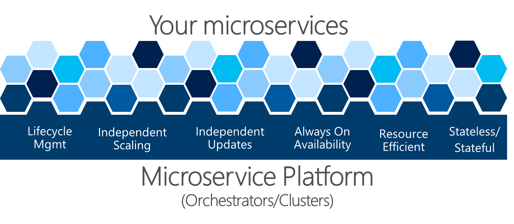
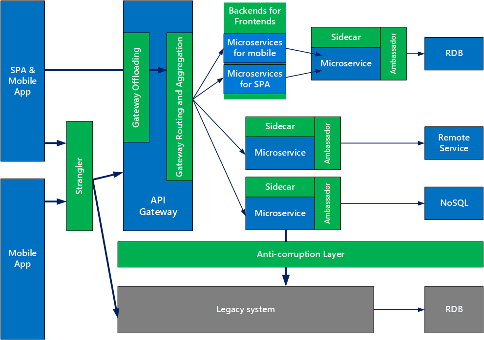

Microservice has been a game changer in software development in the last few years, yet it remains a grey area when it comes to making decision around maintainability and implementation of microservices. The evangelists behind microservice approach have built the case around speed, scalability and cohesion stating in that a microservice Change is easy, Units are small, scalability is semi-infinite. So what is Microservice architecture? Microservices — also known as the microservice architecture — is an architectural style that structures an application as a collection of loosely coupled services, which implement business capabilities.
We will discuss and summarise some of the implementation factors that have a big impact on indicators of success in your project/software delivery viz:
Law of repository management
One of the most active moving parts of microservices is code repositories. They can be categorised into two broader areas.
Majority of microservices evolve over a period of time and it has been observed that based on team and organisation structures derives the strategy adopted for code management. Usually, it naturally tends towards multiple repository pattern due to diverse practices followed in an organisation among various units. This results in poor code re-usability but also provides clear boundaries of ownership. The problem of re-usability can be resolved by implementing a re-usable package, e.g. nuGet for C#, Packet for F# or npm for node etc. As the number of services grows it becomes difficult to debug and cross teams development. Moreover, overall platform knowledge becomes fragmented and abstract due to focused development teams.
For a larger project, it is recommended to use Mono repository with clear segregation of domain functionality and shared core re-usability. This brings standardisation in development style and practices. It provides better integration capabilities and debugging at the cost of a larger code base. Most programming framework provides a modular development approach where we can leverage best of both worlds of mono repo for development and multi repo for build and release.
Law of separation of concern
The most common dilemma that microservice brings into an architects plate is regarding granularity of functionality. As per recommended practice, the domain driven development leads to correct size of bounded context which is articulated based on various business activities and influence. Usually, in the real world, it has been noticed that business units are generated based on software boundaries. Nevertheless using microservices does not imply less code, rather it focuses on maintainability and scalability. If you are planning to create a microservice for each function then you are definitely planning for a disaster. Though segregation shall be based on the business domain but under special scenarios it is absolutely acceptable to deviate and create a separate service based on technical feature, e.g. email service, notification service etc.
The mutual independence across multiple microservices is the core principle behind this architecture. Each service shall ideally implement its own data persistence and caching capabilities. The owner service defines the strategy to create, manipulate and consume service. The external services should not be entertaining data access directly but shall only pass through owner service interfaces only.
The cross-cutting concerns such as security shall be abstracted to gateways such as azure API management, ocelot. In certain scenarios, an aggregator microservice might be required from the client or as a server wrapper to avoid multiple dependency hell.
For a more complex front end, a small microservice shall be created for each unit of a user interface to process data and serve it to the client. This pattern is usually known as UI microservice or backend for front end design.
Law of eventual consistency
Since each service is responsible for consistency and reliability of its data, the cross domain data passing is performed via message passing. It does not result in ACID [atomic, consistent, isolated, durable] principles as these updates are not happening in the transaction. This is can be solved using two-phase commit but will eventually result in high coupling and the core principle of microservices are violated. The microservice architecture is an advocate of CAP theorem i.e. consistent, available and partition tolerant. To achieve the desired benefits of microservices the eventual consistency is implemented via
Event sourcing - We can query an application's state to find out the current state of the world, and this answers many questions. However, there are times when we don't just want to see where we are, we also want to know how we got there. Event Sourcing ensures that all changes to application state are stored as a sequence of events. Not just can we query these events, we can also use the event log to reconstruct past states, and as a foundation to automatically adjust the state to cope with retroactive changes. e.g. database event logs, similar implementation can be adopted for business events and each microservices can perform action independently to bring the system to the desired state eventually.
CQRS - CQRS stands for Command Query Responsibility Segregation. It's a pattern that I first heard described by Greg Young. At its heart is the notion that you can use a different model to update information than the model you use to read information. The microservice can process data and keep up to date information for serving Realtime need but can update the core system from the log. e.g. a notification for e-commerce order placement can be served separately to update in ERP system.
Message/Service Bus - For event-based message passing in microservice either a direct call to the service can be initiated or a message broker such as service bus can be implemented for asynchronous communication maintaining the high demand services to scale to serve client needs and keeping background jobs instance low.
The above eventual consistency also require coordination of execution. The solution is defined as a saga. Implement each business transaction that spans multiple services as a saga. A saga is a sequence of local transactions. Each local transaction updates the database and publishes a message or event to trigger the next local transaction in the saga. If a local transaction fails because it violates a business rule then the saga executes a series of compensating transactions that undo the changes that were made by the preceding local transactions.
There are two ways of coordination sagas:
Law of scalable deployment
Easy deployment and scalability are the key features that bought microservices into the architects toolbox. There are various containerisation frameworks/application that can compile into the deployable image that is ready to scale. Application containerisation is an OS-level virtualisation method which is used to deploy and run distributed applications without launching an entire virtual machine (VM) for each app. Multiple isolated applications or services run on a single host and access the same OS kernel. Application containers include the runtime components -- such as files, environment variables and libraries -- necessary to run the desired software. Application containers consume fewer resources than a comparable deployment on virtual machines because containers share resources without a full operating system to underpin each app.
The most common app containerisation technology is Docker, specifically the open source Docker Engine and container based on universal runtime runC. The main competitive offering is CoreOS' rkt container engine that relies on the App Container (appc) spec as its open, standard container format, but it also can execute Docker container images.
Though containerisation is not required to develop and run microservices, but these two concepts have been tied together as complementary services to generate maximum benefit. The recommended practice is to deploy services using orchestrator such as Azure Kubernetes services, AWS Fargate where that can create an instance for public or private registry such as docker hub, Azure container service etc. You can deploy multiple containers on one host or have one host per container.
Now Azure app service has the capability to run docker image but usually with orchestrators in place, a cluster such as a the docker swarm, Azure service fabric, Azure service fabric mesh is usually used as deployment engine.
Since this dynamic addition or removal of images may result in multiple end-points thus a service discover provider is required to let the traffic get routed to healthy end points only.
Law of greenfield initiation
When working on a greenfield project; multiple design patterns help us structure the system. But following key principles are must have for robust system viz:
Resilience - When a system is under faulty state due to certain unexpected events, the microservice shall be monitored correctly and a new backup service shall immediately become active to minimise the loss of data. If the service or backup is not available then alternate application to keep track of operation shall cover during the downtime. Failure in one service shall not affect other.
Failure - This is an extension of the above-mentioned principle. If a service fails then the dependent service shall have some mechanism to track status and reduce resource wastage. The service might fail temporarily due to some network issue, thus a retry policy shall be applied. A more advanced mechanism would be implementing circuit breaker where after a certain retry it stops sending more message to failed microservice and only passes certain requests in between to check for resume the status.
Availability - Apart from expected and unexpected coding fault recovery, the ability to maintain uptime is the core requirement. Thus having geo-distributed redundant implementation shall be a part of the implementation strategy. For high availability, a blue-green pattern makes sure zero downtime during maintenance and upgrades.
Dev-ops - With the highly scalable environment the automated deployment and ability to version control the services leads to a stable solution. The service discover shall consider service versioning before routing requests.
Scalability - Using ready to deploy lightweight images as container shall allow individual service to scale to meet the growing demand.
Law of brownfield transition
When transitioning from a brownfield project, more effort is required to make sure the stability of the system is not affected. In these scenarios, the Strangler pattern comes to the rescue. The Strangler pattern is based on an analogy to a vine that strangles a tree that it’s wrapped around with. This solution works well with web applications, where a call goes back and forth, and for each URI call, a service can be broken into different domains and hosted as separate services. The idea is to do one domain at a time. This creates two separate applications that live side by side in the same URI space. Eventually, the newly refactored application “strangles” or replaces the original application until finally, you can shut off the monolithic application.
Apart from strangler, an anti-corruption layer implements a facade between new and legacy applications, to ensure that the design of a new application is not limited by dependencies on legacy systems.
Law of implementation patterns

Image Source : Microsoft blog
The eight core widely used microservices are that every architect shall know for high-performance systems includes
Law of communication
For making maintainable microservices it is important to abstract the dependencies. Ambassador pattern can be used to offload common client connectivity tasks such as monitoring, logging, routing, and security (such as TLS) in a language agnostic way.
Another important communication aspect to consider is sync vs async inter-service communication. Having a sync request-response is an anti-pattern and causes bottleneck. The recommended approach is implementing async communication using message broker, hooks or observers
Law of Monitoring
With the implementation of multiple microservices, traditional methods of monitoring will not provide required enterprise scale monitoring and health check. The five key principles of monitoring that shall be included in your strategy are:
By practising the above laws an architect can create a robust solution, using microservices.